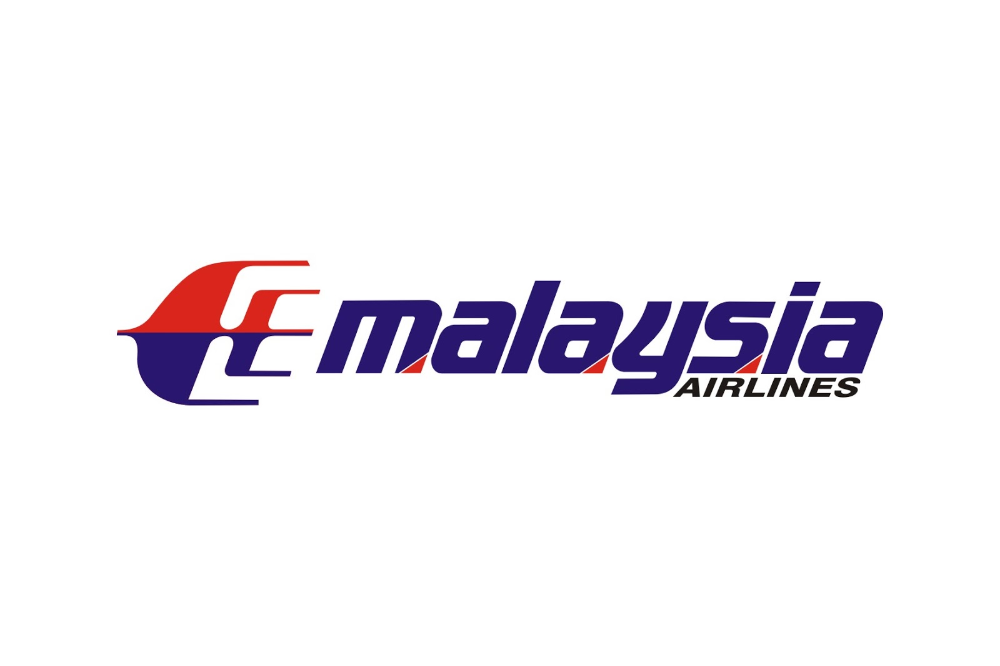
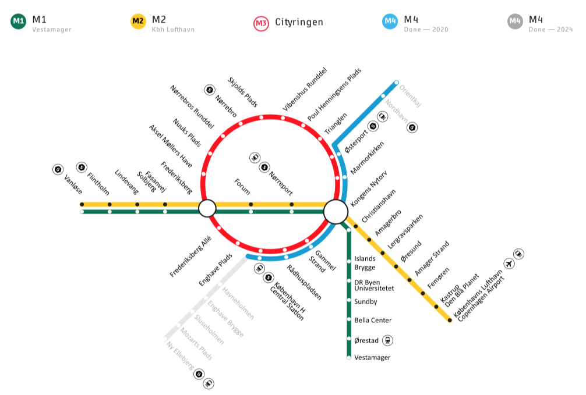
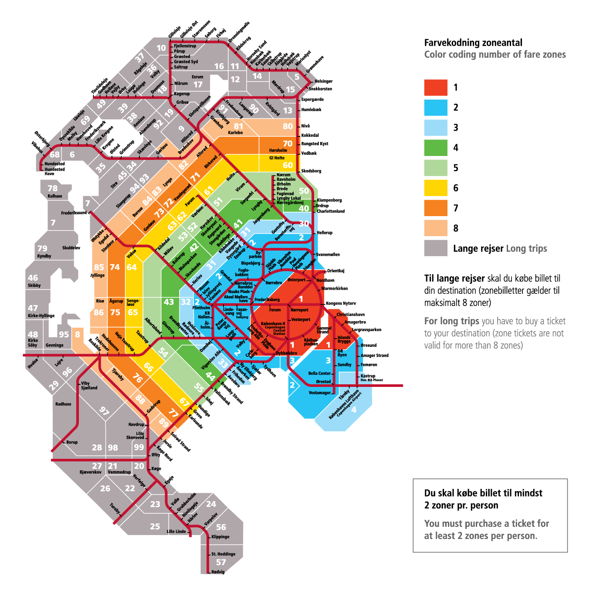
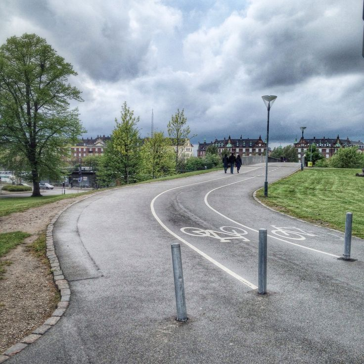
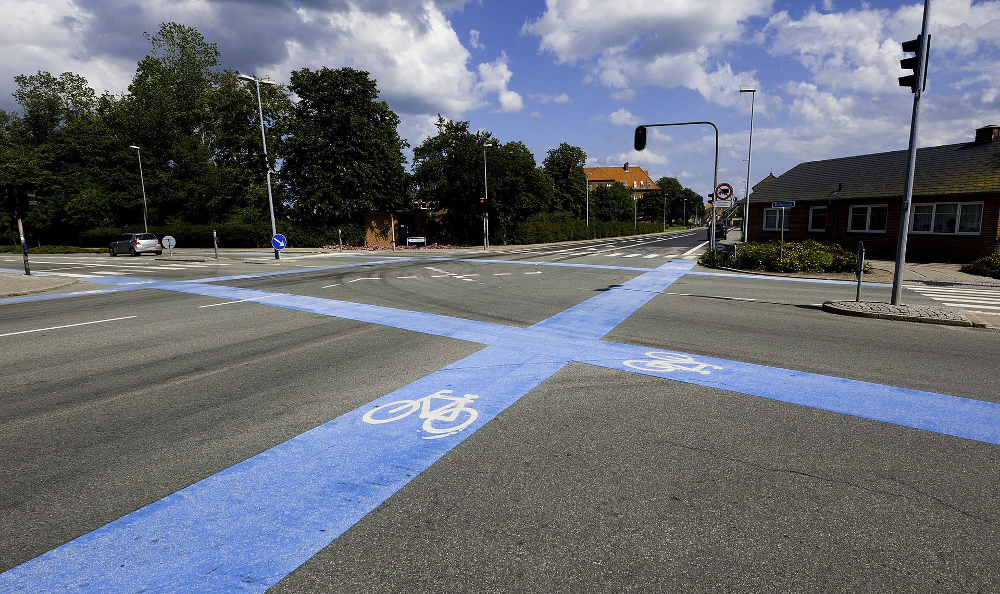
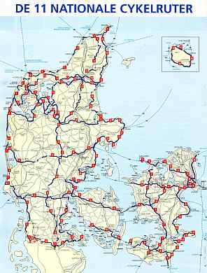
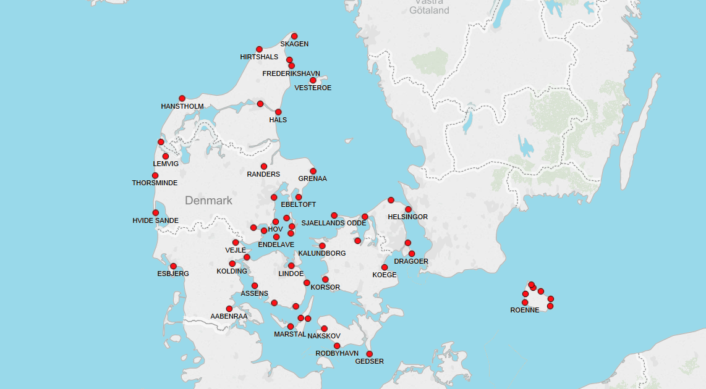

Transportation

Getting In
Plane ticket comparison
*Note: The price is besed on Decemeber 2022, price may vary from time to time.

Turkish Airlines
Services:
- Baggage allowance up to 8kg
- Provides inline entertainment such as magazine, TV, movies and games
- Provides inflight snacks
- Can check in 180 minutes before the scheduled departure time
- Can fly up to 120 countries
Time range [Kuala Lumpur, Malaysia (KUL) - Copenhagen, Denmark (CPH)]: 18 hrs-25 hrs
Price range: RM 2967-3763/pax (economy class),
RM 12850-12928/pax (business class)
Book your tickets here

Malaysia Airlines
Services:
- Baggage allowance up to 7kg
- Provides inline entertainment such as TV, music and radio
- Do not provide inflight snacks
- Can check in 180 minutes before the scheduled departure time
- Contains inflight wifi
- Can fly up to over 1000 destinations worldwide
Time range [Kuala Lumpur, Malaysia (KUL) - Copenhagen, Denmark (CPH)]: 19hrs-30hrs
Price range: RM 2923-7725/pax (economy class),
RM 11022-18876/pax (business class)
Book your tickets here
Emirates
Services:
- Baggage allowance up to 7kg
- Provides inline entertainment such as magazine, TV, movies, live TV and games
- Provides inflight snacks
- Can check in 180 minutes before the scheduled departure time
- Wins 'Airline of the Year' in year 2020
Time range [Kuala Lumpur, Malaysia (KUL) - Copenhagen, Denmark (CPH)]: 18 hrs
Price range: RM 3908-4423/pax (economy class),
RM 11923-14865/pax (business class),
RM 17070-19277/pax (first class)
Book your tickets here
Getting around
Land Transport
Copenhagen Metro
- A 24/7 rapid transit system
- Contains 4 lines, M1, M2, M3 (City Circle Line/Cityringen) and M4 (Harbour Line))
- M1 (13.9 km, 15 stations)
- M2 (14.2 km, 16 stations)
- M3 (15.5 km, 17 stations)
- M4 (20 km, 13 stations) [Expected to open fully in 2024, 8 stations are operational now]

Copenhagen, Denmark metro map
- Note: Copenhagen Metro operates with proof-of-payment system, so riders must have valid ticket before entering the station platform.
- Ticket machines are available at all stations for purchase, including tickets for dogs and bicycles (Yes, the dogs and bicycle are allowed to bring to the metro!)
No more than three zones with Copenhagen Metro policy
When you buy a ticket, you pay for the number of zones you drive in, including the zone where your trip starts. However, if you only travel by metro you'll pay a maximum of three zones- even if the metro runs in zones 1-4.

Zone system for greater Copenhagen area
Prices of Copenhagen Metro
| Ticket type/Price |
Adult |
Children |
| Basic ticket |
DKK 20 (RM 11.93) |
DKK 10 (RM 5.96) |
| Per journey ticket (10 journeys) |
DKK 125 (RM 74.55) |
DKK 60 (RM 35.78) |
| 24-hour ticket (Travel within all zone unlimited for 24 hours) |
DKK 115 (RM 68.59) |
DKK 58 (RM 34.59) |
| Flexcard (Unlimited travel for 7 days within zones indicated on card) [Two zones] |
DKK 200 (RM 119.28) |
- |
Note: The ticket is through conversion of DKK (Danish Krone) to RM (Ringgit Malaysia). The ticket price and conversion rate may varies from time to time
Copenhagen Metro Timetable
| Time/Period |
M1, M2 (Vanløse - Christianshavn) |
M1 (Vestamager - Christianshavn) |
M2 (Lufthavnen - Christianshavn) |
M3 (Cityringen) |
| Rush hour (07hrs-09hrs, 14hrs-18hrs) |
2 |
4 |
4 |
3 |
| Day/evening outside of rush hour + weekend |
3 |
6 |
6 |
4-5 |
| Night after Fri.-Sat (01hrs - 07hrs) |
7-8 |
15 |
15 |
12 |
| Night after Sun.-Thurs. (00hrs - 05hrs) |
20 |
20 |
20 |
6 (one direction) |
Note: The time is based on 24-hour time (eg: 1 pm --> 13hrs)
Cycling around Denmark
- A common and popular recreational and utilitarian activity in Denmark
- Estimated 7,000 kilometres of segregated dedicated bicycle paths and lanes in Denmark
- Four biggest cities covers over 1350 km, which is:
- Aalborg (609 km)
- Odense (510 km)
- Aarhus (450 km)
- Copenhagen (412 km)
- It is more common to have a cycle lane separated by a thick white line and sometimes the lane may be marked by coloured asphalt in older roads

- At intersections, the continuation of the cycle way or lane is often highlighted by a broad blue band to increase its visibility and cyclists may find that they have their own set of traffic lights. Both paths is designed for the more slow pace of utility cycling as opposed to more speedy designs in other countries

Danish National Cycling Routes
It is strongly recomendded tourist to cycle on this route, this route covers over 12000 km nationwide. This enables tourist to view Denmarks natural beauty and villages.

But before we bicycle around the Denmark, we need to understand the rules first. Here are the videos explaining the rules bicycle in Copenhagen:
You can rent your own bicycle and cycle around Denmark here
Sea transport
Ferry services
In Denmark, there are several major tour operators run ferry and cruise services to Denmark from other major Euorpean destinations, some of the examples are:
Every year, Denmark will receive millions and millions of passangers from both domestic and international ferries. The port that receive the highest amount of passanger traffic are:
- Helsingør - 10,967 thousand
- Rødbyhavn - 7,058 thousand
- Frederikshavn - 2,894 thousand
- Sjællands Odde - 2,233 thousand
- Esbjerg - 1,827 thousand
*This is based on 2007 passanger traffic report

Location of sea ports in Denmark
You can find more about ferry rides in Denmark here
Air transport
Airport
In 2021, there are about 28 million passangers used Danish airport. Danish airport not only receives tourist globally, it also brings the locals the ability to travel around Denmark and to other countries
Some of the main airports in Denmark are:
Copenhagen International Airport
- Contains 2 terminals to check in, which is Terminal 2 and Terminal 3, baggage claim is in terminal 3 while the security check is between Terminal 2 and Terminal 3
- Contains trains and metro that can send passanger to Copenhagen city
- Won the World's Best Airport Security Award by Skytrax in 2013 due to good quality of the security service procedures
- Copenhagen International Airport is just 8 km from city center
- Have a car park, a railway station, Gate Gourmet catering facility and cargo terminals for DHL and SAS in the eastern area
- Host to 21.5 million passengers in 2010
- Contains automated baggage system
Billund Airport

- Nearby to Legoland Billund Park which is suitable to bring kids to play when reach the airport
- Contains coffee shop on ground floor, while on the third floor there are restaurants and fast foods outlets
- Contains duty-free items shop on the second level
- Contains left luggage service in the Arrivals Hall, from 8 am to 12am
- Contains gas station, football tables and smoking cabins
- Taxi and bus services available
Airlines
There are also airlines that prepared for the tourist and locals to travel around Denmark and internationally. There are several daily flights from Copenhagen to cities around Denmark Some of the examples are:
Scandinavian Airlines (SAS)
Contains direct flights to:
Norwegian Air Shuttle
Contains direct flights to: